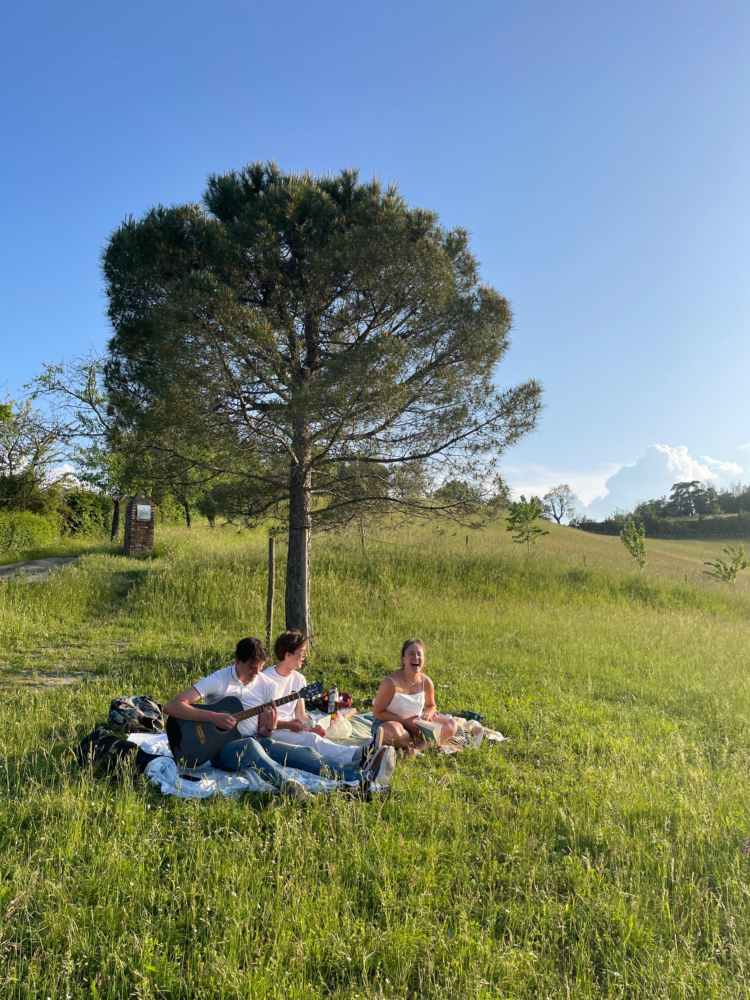
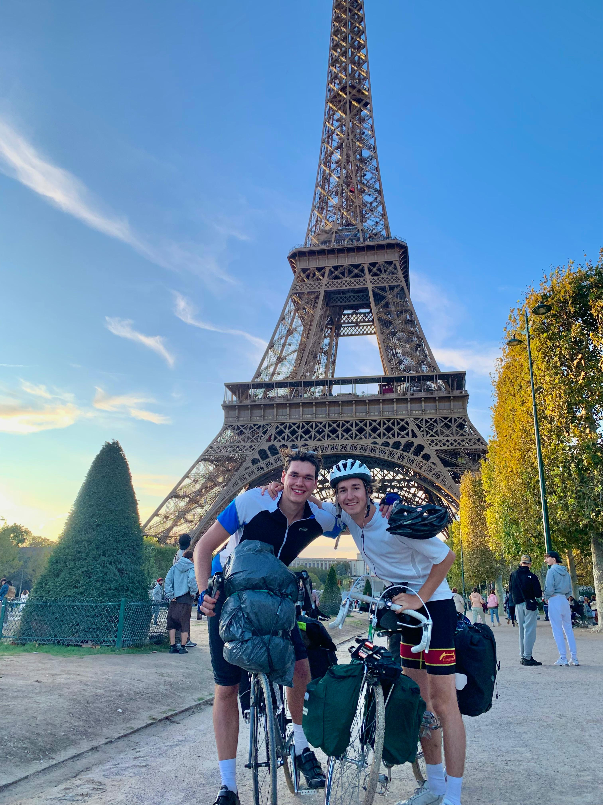
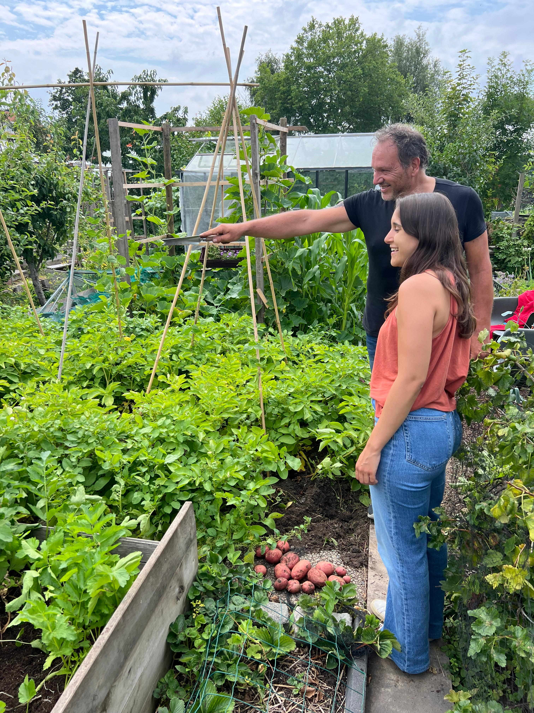
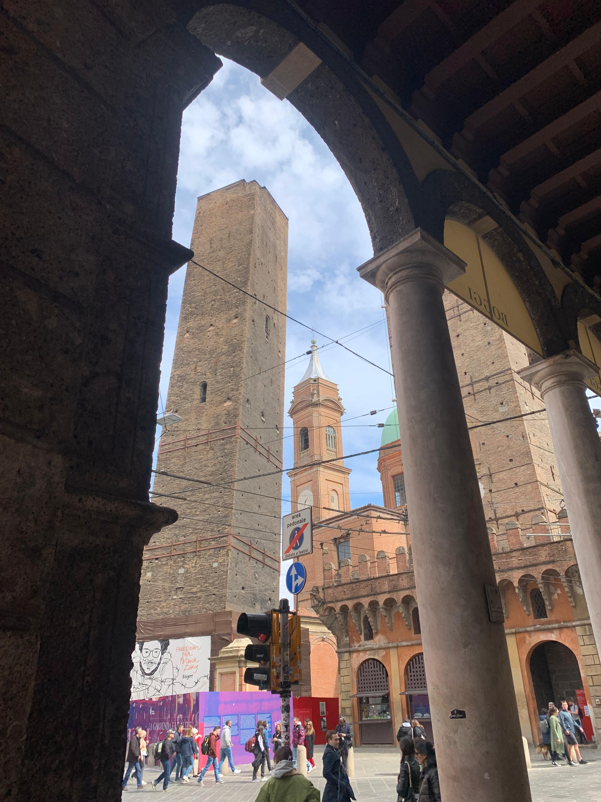
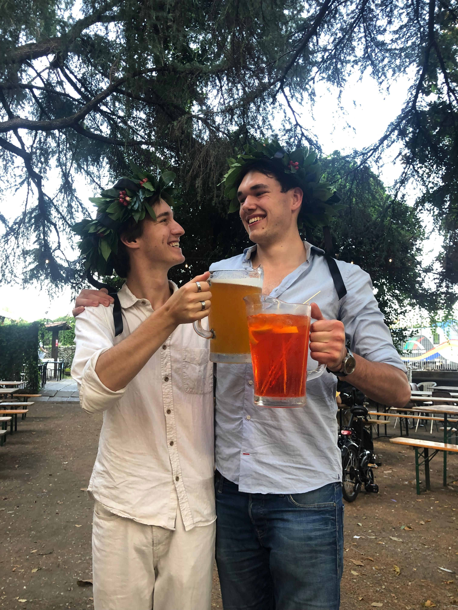
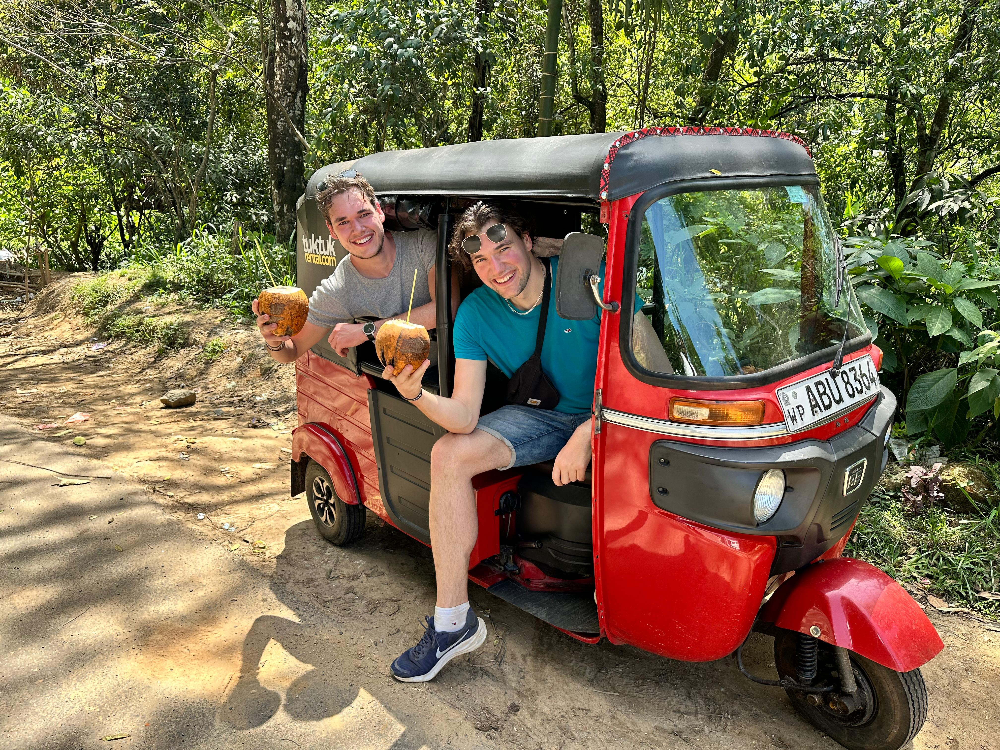
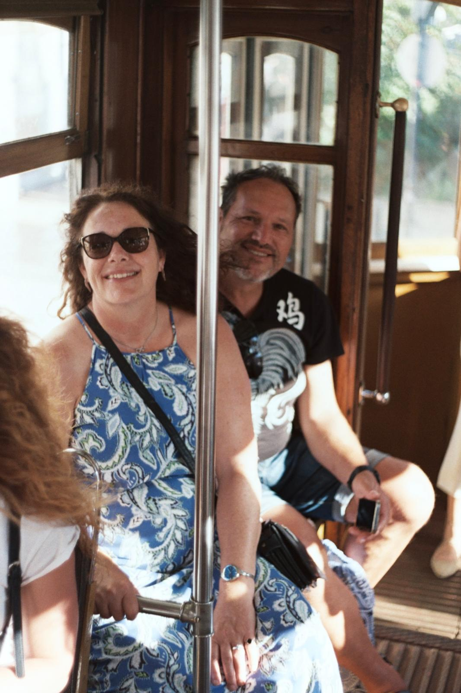

Making music, making things.
I play guitar, and that love of music combined with a maker’s instinct led me to build one myself.
Beyond the portfolio
Curiosity does not stop at the studio. It is how I make, travel, learn and spend time with the people closest to me.

I play guitar, and that love of music combined with a maker’s instinct led me to build one myself.

I love cycling trips—this was a ride to Paris with a friend—and travelling far beyond the familiar.

With my father I share an allotment where we grow vegetables and fruit. We also built our greenhouse together.

My exchange in Bologna was one of the best periods of my life, so I extended it to graduate there.

Graduating in Bologna made the experience feel even more personal and memorable.

My brother is also my best friend. Together we travelled Sri Lanka by tuk-tuk—one moment on a long bucket list.

My family means a great deal to me. I also enjoy analogue photography, which is how I made this portrait of my parents.